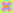

grid
display: grid; grid-template-columns: 1fr 50% 1fr; trois colonnes. également grid-template-rows. 1fr représente une fraction de l'espace restant.
grid-gap: 1em 1em; grid-row-gap + grid-column-gap
justify-items: end; start, center. stretch est la valeur par défaut si les éléments n'ont pas de largeur.
align-items: end; start, center. stretch est la valeur par défaut si les éléments n'ont pas de largeur.
pour le conteneur: grid-template-areas: "a a b" "c c b"; pour les carrés: grid-area: a;
pour un carré: grid-column: 1/4; grid-column-start + grid-column-end. également avec row.
revenir au sommaireflex-box
display: flex; flex-direction: row; justify-content: space-around; align-items: stretch; fd column, row-reverse, column-reverse; ne pas préciser de height pour les éléments interne afin que stretch fonctionne.
justify-content:space-between
justify-content:space-evenly
justify-content:center; flex-start et flex-end (carré collé à gauche ou à droite de la boîte) existent aussi.
align-items: center; flex-start et flex-end (carré collé au haut ou au bas de la boîte) existent aussi. préciser une hauteur pour les éléments internes vides.
flex-grow: 1; pour les carrés internes.
flex-direction: column; flex-wrap: no-wrap; pour le petit carré: flex-shrink: 2;
flex-direction: column; flex-wrap: wrap; également wrap-reverse.
align-self: flex-end; pour un carré interne ayant une hauteur.
revenir au sommaireles formulaires
revenir au sommaireles listes
- display: list-item; list-style-type: disc;
- valeur par défaut.
- list-style-type: circle;
- b
- list-style-type: none;
- b
- list-style-type: square;
- b
- list-style-type: decimal;
- valble pour les ol et les ul.
- list-style-type: lower-roman;
- existe avec upper-roman
- list-style-type: lower-latin;
- b
- list-style-type: lower-greek;
- b
les tableaux
| aa | a1 | a2 |
|---|---|---|
| bb | b1 | b2 |
| aa | a1 | a2 |
|---|---|---|
| bb | b1 | b2 |
l'espace autour des éléments
margin: 0; padding: 0;
padding: 2em;
margin: 2em;
margin-left: 2em;
margin-right: 2em;
margin-top: 2em;
margin-bottom: 2em;
padding: 2em 4em 2em 4em; haut, droite, bas, gauche
padding: 2em 1em; haut-bas et gauche-droite
les variantes de padding existent chez margin, et vice-versa.
revenir au sommaireles fonds
background-color: orange;
background-color: transparent;
les dégradés
plus d'infosbackground: linear-gradient(45deg, deeppink, orange, deeppink);
background: linear-gradient(45deg, deeppink, 10%, orange, 90%, deeppink); emplacement de la couleur médiane
background: linear-gradient(45deg, deeppink 10%, orange 90%, deeppink); centre de la couleur
background: linear-gradient(45deg, deeppink 30%, orange 30%, deeppink);
background: repeating-linear-gradient(45deg, deeppink, orange, deeppink);
background: radial-gradient(deeppink, orange, deeppink);
background: radial-gradient(at 10% 50%, deeppink, orange, deeppink);
background: conic-gradient(deeppink, orange, deeppink);
trois gradients semi-transparents superposés
les images
background-image: url('...'); pas d'espace entre url et (
background-image: url(...); background-repeat:no-repeat;
background-image: url(...); background-repeat:repeat;
background-image: url(...); background-repeat:repeat-x;
background-image: url(...); background-repeat:repeat-y;
background-image: url(...); background-size: cover;
background-image: url(...); background-size: contain;
background-image: url("data:image/svg+xml;utf8,< svg >...< /svg>")
les variables css ne sont pas prises en compte, ainsi que les valeurs d'un css externe.
revenir au sommaireles bordures
border-color: #0CC; border-width: 4px; border-style: solid;
border-style: none;
border-style: dashed;
border-style: dotted;
border-style: double;
border-radius: 4px;
border-radius: 50%;
revenir au sommaireles images et les liens
les attributs src et alt sont obligatoire. par défaut, laisser alt vide.
width, height, object-fit: fill. ajuster l'image à son cadre, en la déformant. affichage par défaut si width et heigth sont précisés.
width, height, object-fit: contain. ajuster l'image dans son cadre, en gardant ses proportions. elle peut être plus petite que son cadre.
width, height, object-fit: cover, object-position:left top. ajuster l'image à son cadre, en gardant ses proportions. elle est rognée si elle dépasse de son cadre.
lienl'attribut href est obligatoire, même s'il est vide. # permet de désactiver la redirection.
< base target='_blank' href='C:/Users/deborah.powers/Desktop/articles/'/>
base pré-écrit des infos pour les liens et les images. on le met dans le head.
valeurs de href: # désactiver le lien, #id un élément de la page qui a pour id id, http://www.truc.fr/ une page web, c://truc/machin.html un fichier (ou un dossier) local.
revenir au sommairemath ml
sourceun mrow représente une expression. ici, j'ai rangé chaque équation dans sa propre balise math, mais je peux en mettre plusieurs dans la même balise.
revenir au sommaireles media queries
@media print {
body { color: red; }
p { color: blue; }
}
affichage pour les tablettes
@media (max-width: 992px){}
affichage pour les smartphones
@media (max-width: 768px){}
les formes
.shape .heart
.shape .cloud
.shape .moon
revenir au sommaireles animations
id= animated
animation-name: movement;
animation-duration: 10s;
animation-iteration-count: 3; infinite
animation-direction: alternate; normal, reverse
@keyframes movement
from {...} to {...}
0% {...} 50% {...} 100% {...}
bonus
animation-delay: 1s;
animated:hover { animation-play-state: paused; } running
revenir au sommaire